Cómo Centralizar tu Firma Electrónica en el SII
Antes de configurar cualquier facturador electrónico, debes centralizar tu certificado digital en el Servicio de Impuestos Internos. Este proceso solo se realiza una vez y aplica para todos los sistemas de facturación que uses.
¿Aún no tienes una Firma Electrónica o Certificado Digital?
Puedes adquirirla en Haulmer, proveedor autorizado en Chile. Este certificado te servirá no solo para facturación electrónica, sino también para otros procesos de validación ante el SII y organismos del Estado.
Obtener Firma Electrónica en Haulmer →1 Centralizar el Certificado Digital en el SII
Este proceso carga tu firma electrónica (.pfx) en los servidores del SII para que cualquier facturador autorizado pueda usarla sin que entregues tu contraseña personal.
1 Ingresar al SII con tu RUT
Ve a homer.sii.cl y haz clic en Mi SII para iniciar sesión. Debes ingresar con el RUT de la persona asociada a la firma electrónica (representante legal de la empresa).
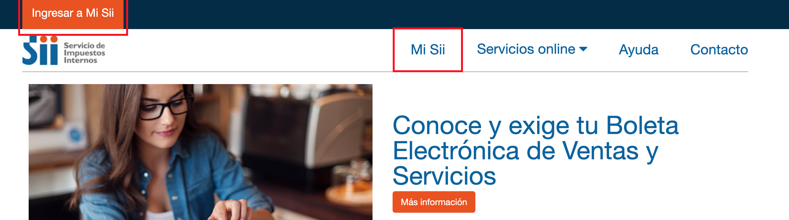
2 Autenticarse con RUT y contraseña
El sistema te solicitará tu RUT y contraseña tributaria.
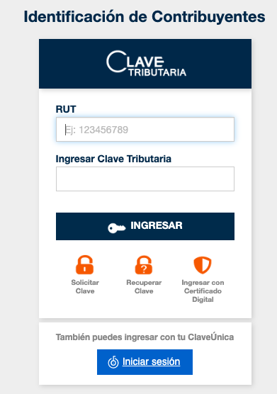
3 Ir a Servicios Online → Facturación Electrónica
Una vez dentro, dirígete al menú superior: Servicios Online → Facturación Electrónica.
4 Seleccionar "Conozca sobre Factura Electrónica"
En la lista de opciones, haz clic en Conozca sobre Factura Electrónica.
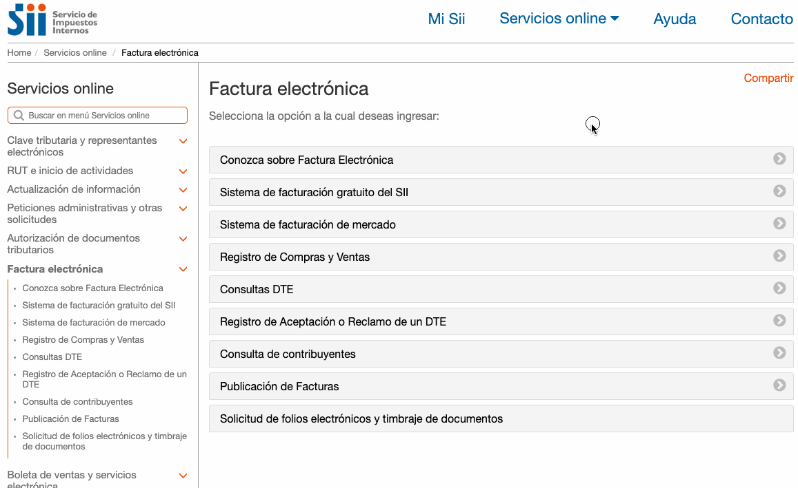
5 Ingresar a "Certificado Digital" → "Centralizar certificado digital"
Busca la sección Certificado Digital y luego haz clic en Centralizar certificado digital.
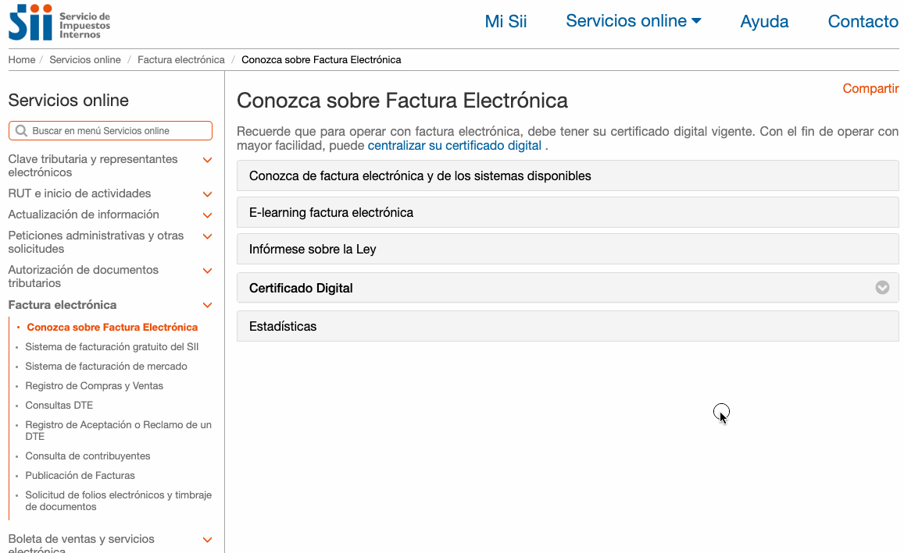
6 Cargar el archivo de la firma y contraseña
Sube el archivo de tu firma electrónica (.pfx o .p12) y luego ingresa su clave de seguridad. Cuando estés listo, haz clic en Enviar.
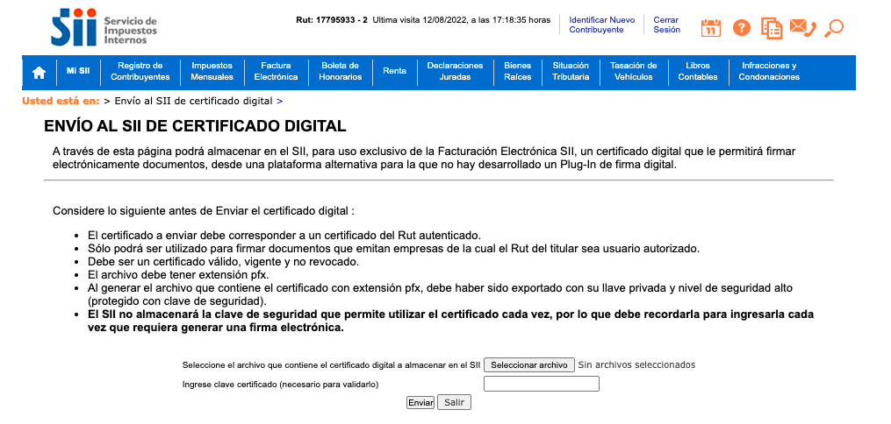
7 Confirmación exitosa
Si el proceso fue correcto, verás el mensaje "Se guardó archivo OK". Luego presiona Cerrar y Salir.
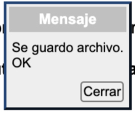
✅ Certificado centralizado correctamente. Ya puedes continuar con el Paso 2.
2 Habilitar la Autenticación con Firma Electrónica
Este paso activa el método de autenticación por firma digital, que es requerido por los facturadores electrónicos para operar en tu nombre.
1 Cerrar sesión e ingresar a "Mi SII"
Si tienes sesión activa, ciérrala. Luego, en la página principal del SII, haz clic en el botón naranja "Ingresar a Mi SII" (esquina superior izquierda).
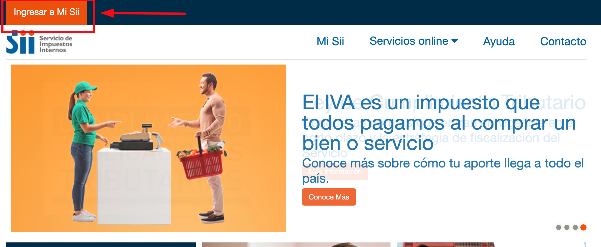
2 En tablet o teléfono
En dispositivos móviles, busca el ícono de persona en la parte superior derecha. Al presionarlo, aparecerá el menú — selecciona "Ingresar a Mi SII".
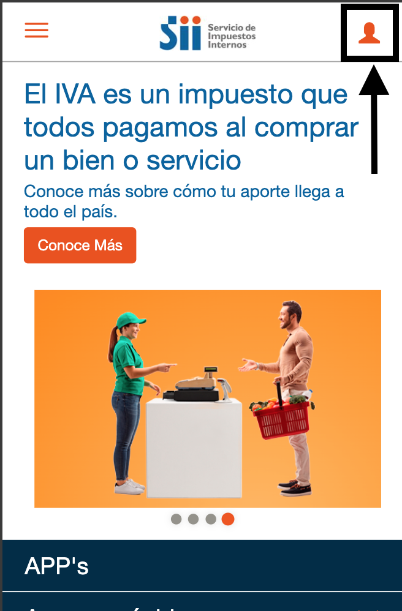
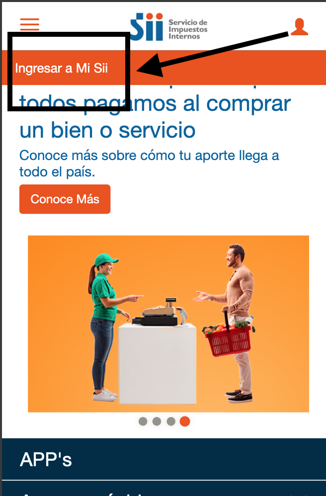
3 No inicies sesión — haz clic en "Recuperar clave"
En la sección de identificación, no ingreses tu contraseña. En cambio, haz clic en "Recuperar clave".
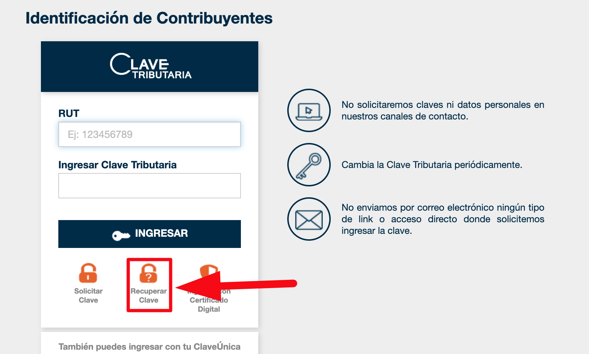
4 Ingresar el RUT del representante legal
Importante: Debes usar el RUT del representante legal de la empresa, no el RUT de la empresa.
Acepta la cláusula y presiona CONTINUAR.
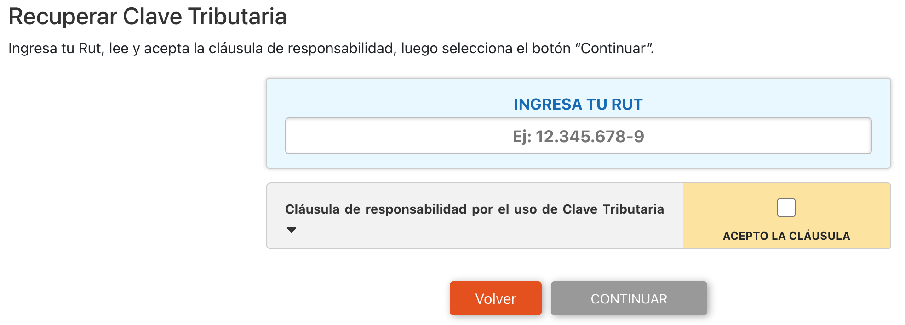
5 El sistema enviará un código provisorio por correo
El SII te mostrará el correo registrado (con algunas letras ocultas). Si lo reconoces, presiona CONTINUAR.
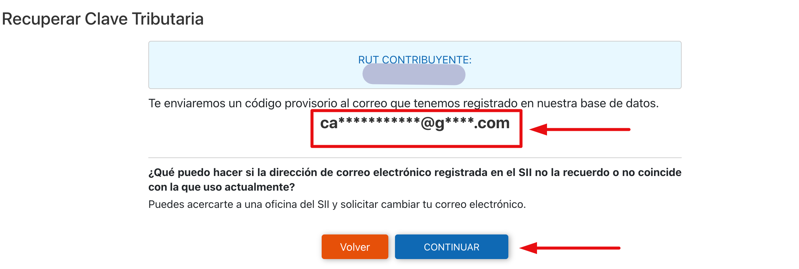
6 Presionar "IR A RECUPERAR CLAVE"
Se mostrará un mensaje de confirmación. Haz clic en IR A RECUPERAR CLAVE para continuar.
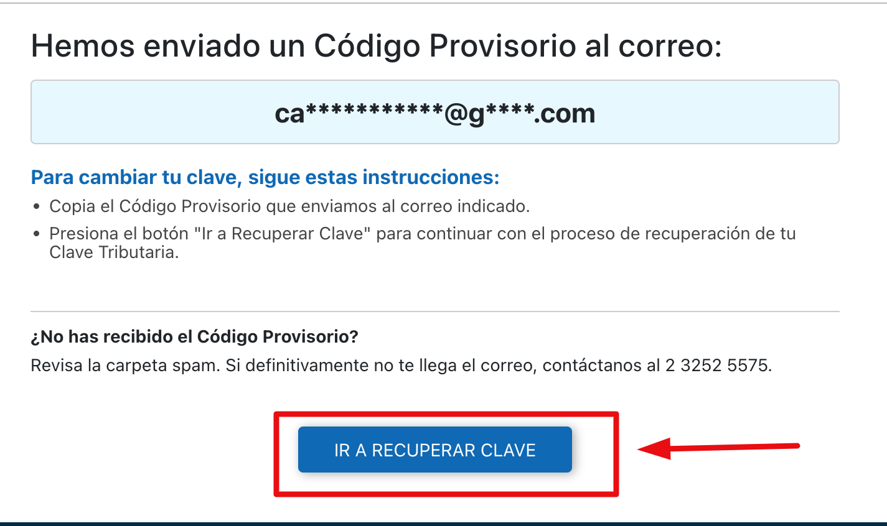
7 Ingresar nuevamente el RUT y seleccionar "INGRESAR CÓDIGO PROVISORIO"
Acepta la cláusula, presiona continuar y luego haz clic en "INGRESAR CÓDIGO PROVISORIO".
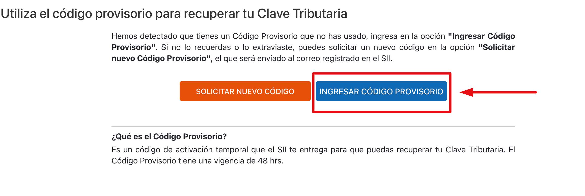
8 Revisar el correo y copiar el código
Busca en tu bandeja de entrada un correo del SII con el asunto exacto "Clave Tributaria SII". Copia el código que viene dentro.
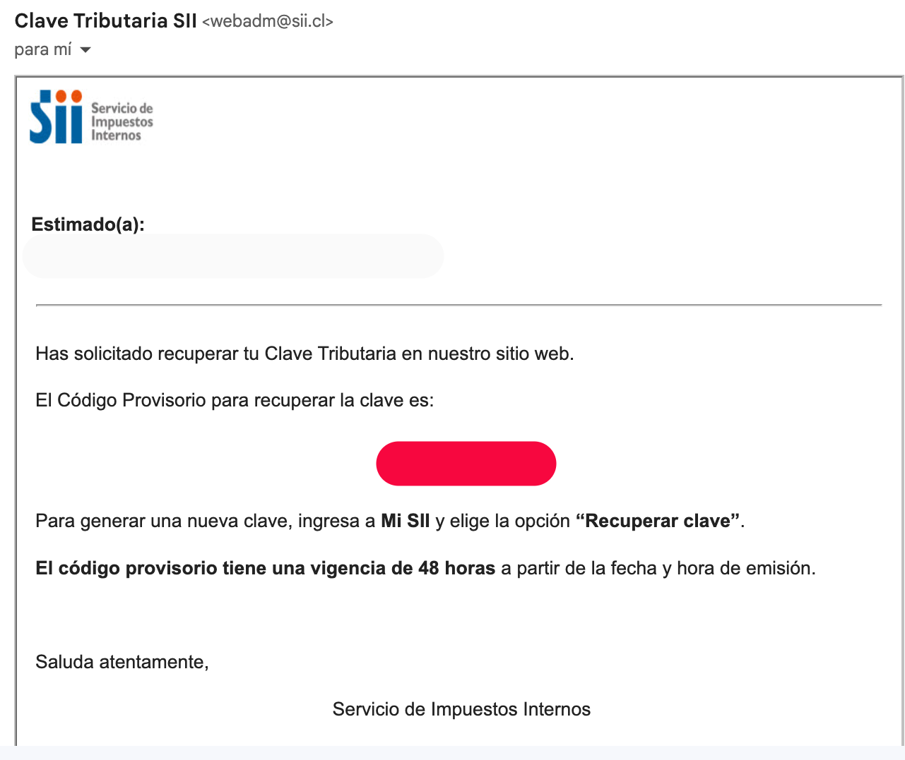
9 Ingresar el código y presionar "ENVIAR CÓDIGO"
En la ventana que se abre, ingresa el código del correo y presiona ENVIAR CÓDIGO.
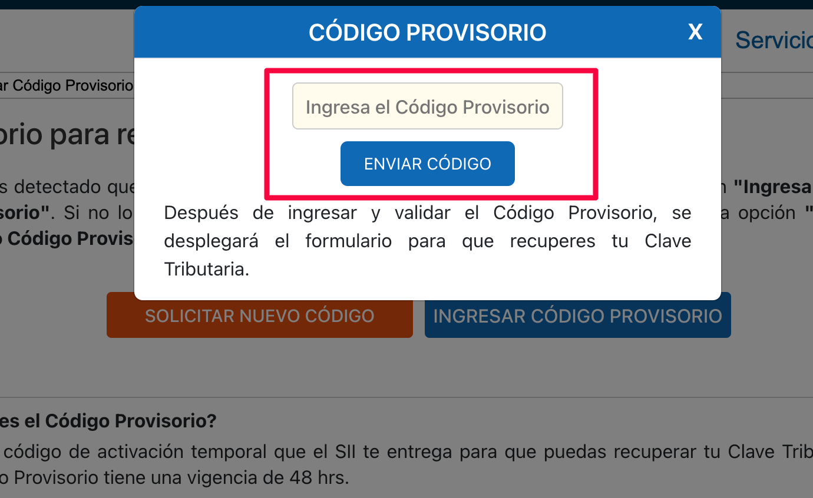
10 Configurar la nueva clave y habilitar Certificado Digital
Ingresa tu nueva contraseña (puedes mantener la misma). Luego, en las opciones de acceso, marca obligatoriamente la primera opción:
"Utilizando Clave Tributaria o Certificado Digital"
Esta opción es imprescindible para que el facturador electrónico pueda autenticarse en tu nombre.
Finalmente, haz clic en Enviar formulario.
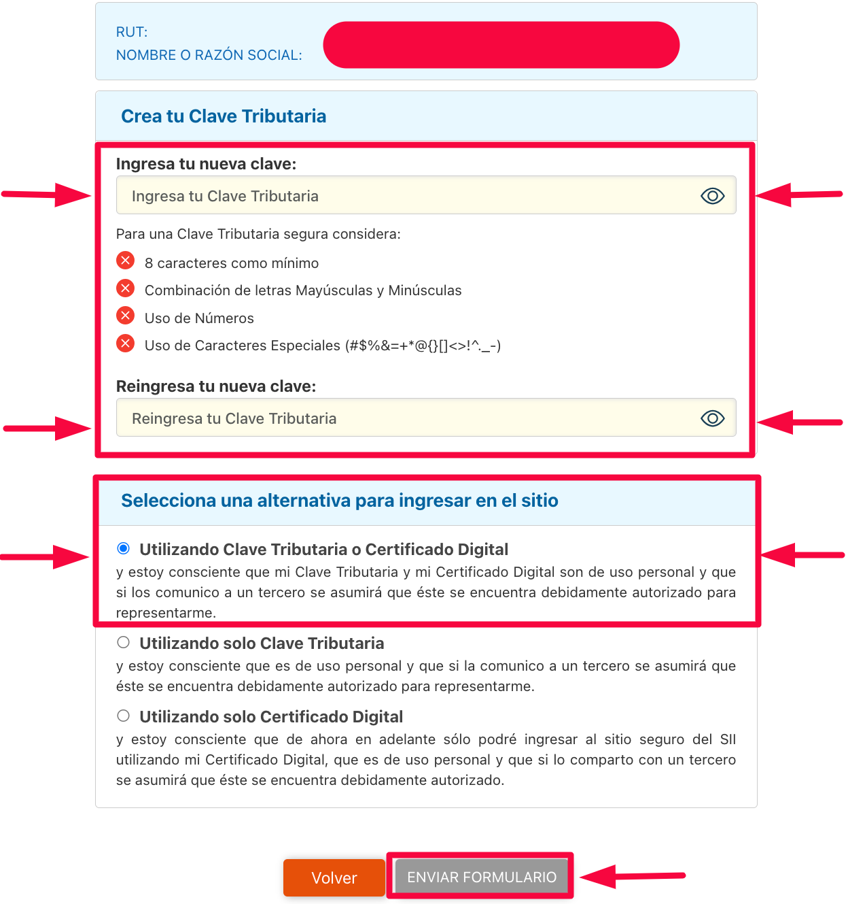
✅ Tu firma electrónica está habilitada. Verás un mensaje confirmando que tu nueva clave tributaria fue configurada exitosamente.
¡Todo listo!
Ya tienes tu firma electrónica centralizada y habilitada en el SII. Ahora puedes continuar con la configuración de e-Boleta Chile en tu tienda Shopify.
Continuar con la configuración en e-Boleta →